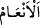

değiştirecekler» (dedi). Kim Allah’ı bırakır da şeytanı dost edinirse elbette apaçık
bir ziyana düşmüştür.
“Onları mutlaka” haktan “saptıracağım,” İblis’in onları haktan saptırmasından
maksat, onlara vesvese vererek bâtıl şeylere çağırmasıdır. Bu çağırma ve vesvesenin
dışında sapıklığa düşürmek için başka bir gücü olsaydı bütün insanları saptırırdı. Hz.
Peygamber (s.a.v) onun hakkında; “İblis, bâtılı süslü gösterici olarak yaratıldı.
Sapıklığa düşürmek onun elinde değildir.”[157] buyurmuştur.
“Muhakkak onları boş kuruntulara boğacağım.” Onları bâtıl hayallere daldıracağım
da uzun ömür ve çok mal isteyecekler.
Şeytanın insanları kuruntulara sokmasından maksat, onlara öldükten sonra dirilmenin,
cennetin, cehennemin ve hesâba çekilmenin olmayacağını söylemesidir. Başka bir îzaha
göre de insana âhirette Allah’ın bol lütuf ve rahmetine kavuşacağını söyleyerek
aldatmasıdır. “Kesinlikle onlara emredeceğim de.” benim emrime uyarak hemen
“hayvanların kulaklarını yaracaklar.”
Müfessirler bu ifâdeyle adak için ayrılan develer ile beş nesil doğurmuş develerin
kulaklarının kesilmesinin kastedildiğinde birleşmişlerdir. Âyetteki “” deve, sığır
ve davarı içine alır. Yâni Ben onları bu hayvanların kulaklarını kesmeye, onlara “adak
deve, beş nesil doğuran deve, on nesil doğuran deve ve sırtı dağlanan deve” anlamında
“bahiyra, sâibe, vasîle, hâmî” adını vererek kendilerine haram kılmaya teşvik
edeceğim.
Câhiliye devri insanı, bir dişi deve beş defâ doğurur ve beşincisi erkek olursa o
hayvanın kulaklarını yararlar, ona binmezler, sağmazlar, kesmezler, su ve otlaktan men
etmezlerdi. Yorgun birisi onunla karşılaştığında ona binmezdi. Bu deveye “bahîra”
derlerdi. Yedi defâ doğum yaptığında böyle yaptıkları da söylenmiştir.
Sâibe: Başıboş bırakılmış, dilediği yere giden devedir. Câhiliye arabı şöyle derdi:
“Şayet iyileşirsem benim devem serbesttir (saibedir).” Yâhut “Yolcum seferden
dönerse” veyâ “Vatanıma ulaşırsam” yâhut “Karım erkek doğurursa” vb. bir söz söyler
ve bu olursa devem serbesttir.” der, o deve bahîra gibi olurdu. Kezâ malı çok olan
kimse de cömertlik olsun diye o hayvanlardan birini salıverirdi. Ondan hiçbir şekilde
faydalanmazlar, onu su ve otlaktan ölünceye kadar men etmezlerdi. O hayvan ölürse
etinden kadınlar ve erkekler yerlerdi.
Vasîle: Koyun yedi defa doğum yapar da yedinci yavrusu erkek olursa o yavruyu
putlar için keserler ve onun etinden kadınlar değil yalnızca erkekler yerdi. Şayet doğan
yedinci yavru dişi olursa ondan istifâde ederler ve diğer normal koyunlar gibi
sayarlardı. Eğer hayvan hem erkek hem dişi doğurursa; “Dişi erkek kardeşine ulaştı”
derler onu dişi kardeşi sebebiyle öldürmezler ve o hayvan sâibe hükmüne girerdi. O
hayvandan kadınlar değil yalnız erkekler faydalanırdı.
Hâmî: Yavrusunun yavrusunu gören deve demektir. Yâhut da yavrusunun yavrusuna
binilmesini gören erkek deve demektir. Araplar o deveye; “Bu deve sırtını korudu”